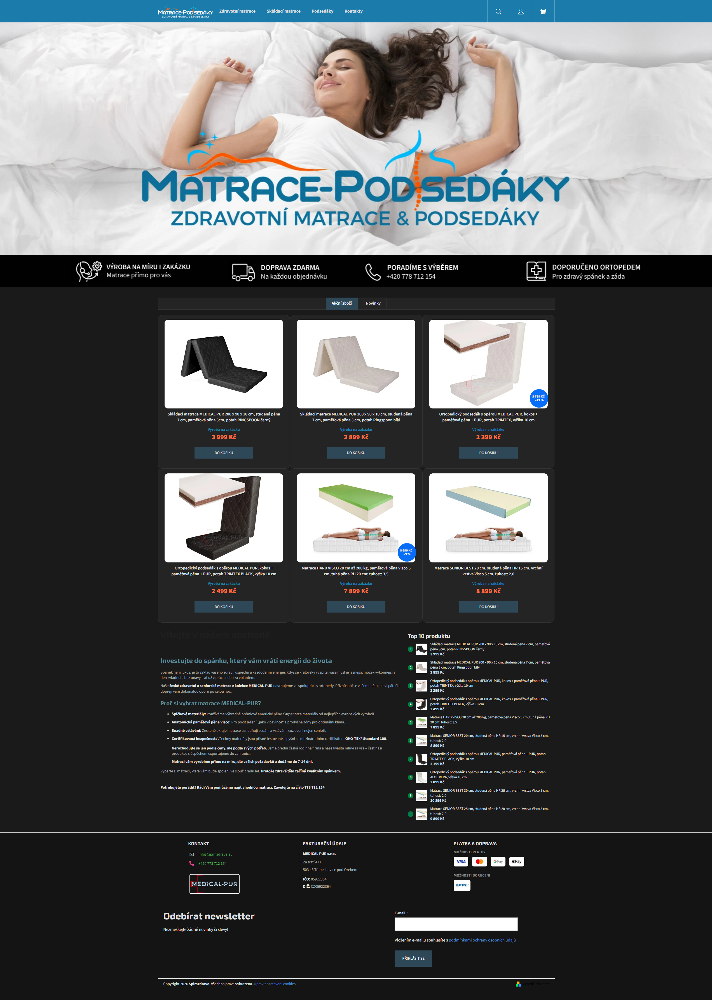
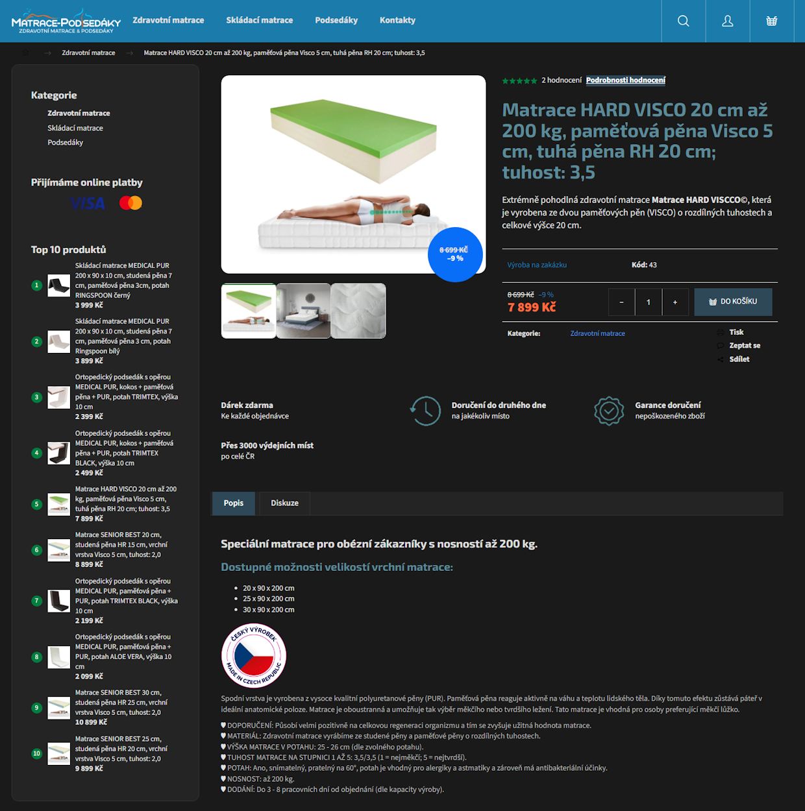
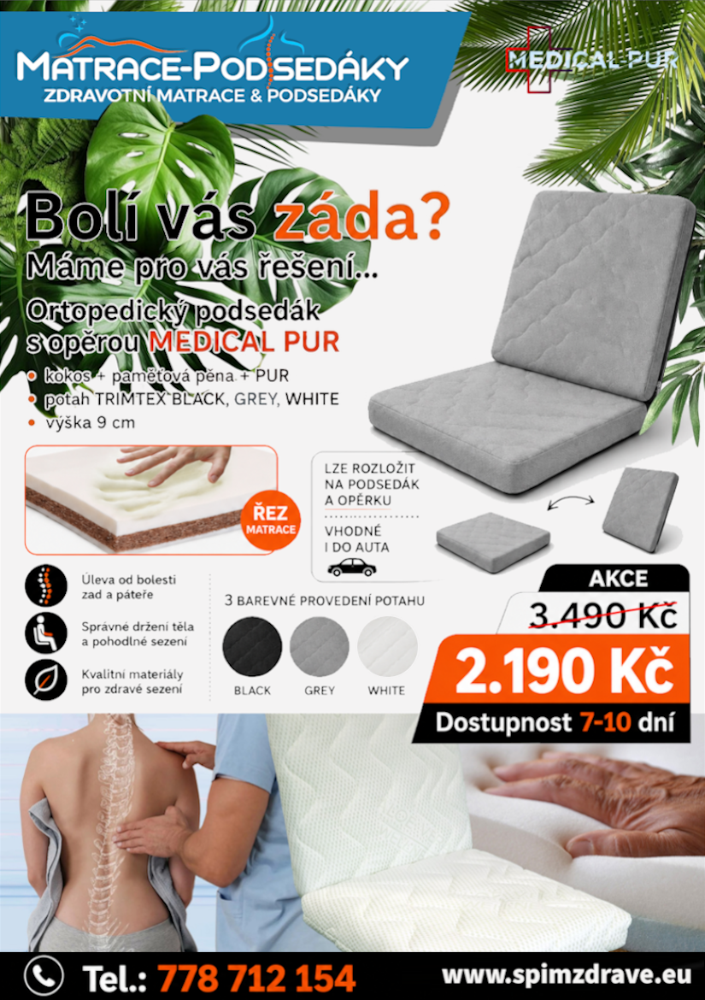
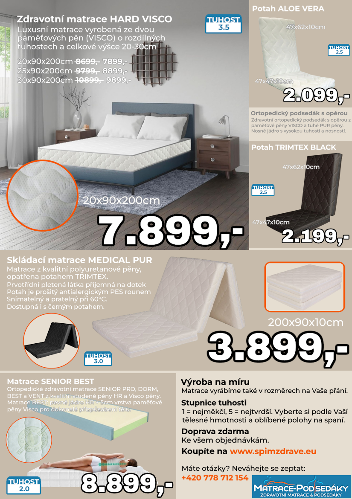

Vybrané práce, 2023–2026

Jeden outfit, sedm inzerátů
Vyfoceno na Samsung Galaxy S24, vytvořeno pro prodej na Grailed, Vinted a Depop. Kompletní postprodukce a tvorba pozadí v Paint.NET.




Web spimzdrave.eu a propagační leták
Klientská práce — web postavený na Shoptetu, grafická úprava v HTML a CSS. Návrh banneru e-shopu a letáku z produktových fotek dodaných značkou Medical-PUR.


Meridian, 60 seconds
Brand film cut from six hours of rushes. Three versions delivered in a day.


Studio portraits
Skin and tonal work for a company profile series. Twenty-eight sitters.


Harbour, night
Underexposed rushes recovered and graded for a music video.


Four plates, one room
Composite for a furniture catalogue, assembled from separately lit exposures.


Archive restoration
Family negatives from 1961, cleaned and rebuilt where the emulsion had lifted.


Salt
Short film, 12 minutes. Edit, titles, and sound handover.
Hledáš něco, co tu není? Napiš mi o kompletní nabídce.